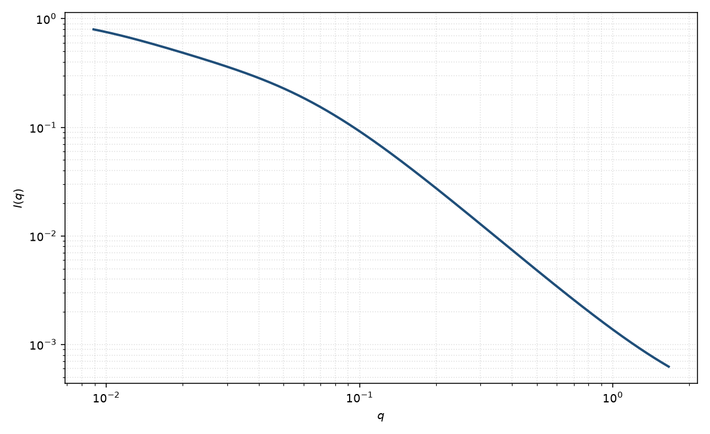

双洛伦兹
two Lorentzian
适用场景
凝胶、半稀释溶液或微相分离体系常常同时有大尺度静态不均与小尺度热涨落。两个洛伦兹分量用两个 $\xi$ 描述，而不引入峰位。
若其中一个分量其实是高斯型固态不均质，应改用高斯–洛伦兹凝胶。出现峰则改用宽峰或 Teubner–Strey。
物理图像
强度是两个 OZ 项之和。长 $\xi$ 控制低 $q$ 发散的快慢，短 $\xi$ 控制高 $q$ 的 $q^{-2}$ 尾。两者在实空间对应两套指数关联。
没有取向几何；各向异性时应给每套关联两个方向的 $\xi$。
示意图

核心公式
出发点
两套独立的指数关联（例如大尺度静态不均与小尺度热涨落）在互不耦合时，强度是两个 Ornstein–Zernike 项之和。每一项仍由 $\gamma_i(r)\propto\mathrm{e}^{-r/\xi_i}/r$ 的三维 Fourier 变换得到。
推导
单洛伦兹的推导见洛伦兹页：$\mathrm{FT}[\mathrm{e}^{-r/\xi}/r]\propto 1/(1+\xi^2 q^2)$。线性叠加
$$I(q)=\frac{A_1}{1+\xi_1^2 q^2}+\frac{A_2}{1+\xi_2^2 q^2}+B.$$约定 $\xi_1>\xi_2$。幅度 $A_i$ 吸收各套涨落的衬度与强度。交叉项被略去，相当于两套模在平均场下解耦；若有耦合峰，应改用宽峰或 Teubner–Strey。
低 $q$ 与渐近
低 $q$ 由长分量主导：$I\simeq A_1+A_2-(A_1\xi_1^2+A_2\xi_2^2)q^2+\cdots$。高 $q$ 两套都 $\sim q^{-2}$，合起来仍是 $q^{-2}$，系数 $A_1/\xi_1^2+A_2/\xi_2^2$。短 $\xi$ 控制何时进入这条尾。
$\xi_1\to\xi_2$ 时退化为单洛伦兹。固态不均质若低 $q$ 不发散，应把长分量换成高斯（Gauss–Lorentz 凝胶）。
参数表
| 参数 | 符号 | 含义 | 单位 | 典型范围 |
|---|---|---|---|---|
| 长关联长度 | $\xi_1$ | 大尺度涨落 | Å | 50–2000 Å |
| 短关联长度 | $\xi_2$ | 小尺度涨落 | Å | 5–100 Å |
| 幅度 | $A_1,A_2$ | 两个洛伦兹前置 | 与强度单位一致 | 相对权重由数据约束 |
| 标度 / 本底 | $\mathrm{scale}$, $B$ | 前置因子与常数本底 | 与强度单位一致 | 实验相关 |
拟合注意
取向：粉末各向同性假定。若只有一个方向被拉伸，两个 $\xi$ 都会变成张量，本模型不够。
多分散与两套 $\xi$ 的分布会混在一起，表现为有效指数偏离 $-2$。磁性：磁不均质往往只有一套较长的 $\xi$。
可辨识性：四个参数加本底很容易交换。应先固定短 $\xi$ 的高 $q$ 窗口，再放开长分量。$\xi_1\approx\xi_2$ 时退化为单洛伦兹。
相近模型
- 洛伦兹 — 只需一个关联长度。
- 高斯–洛伦兹凝胶 — 大尺度用高斯而不是第二个洛伦兹。
- Debye–Anderson–Brumberger — 单长度但 $q^{-4}$ 尾。
参考文献
- Shibayama, M. Spatial inhomogeneity and dynamic fluctuations of polymer gels. Macromol. Chem. Phys. 1998, 199, 1–30. DOI: 10.1002/macp.1998.021990101
- Ornstein, L. S.; Zernike, F. Proc. Acad. Sci. Amsterdam 1914, 17, 793–806.